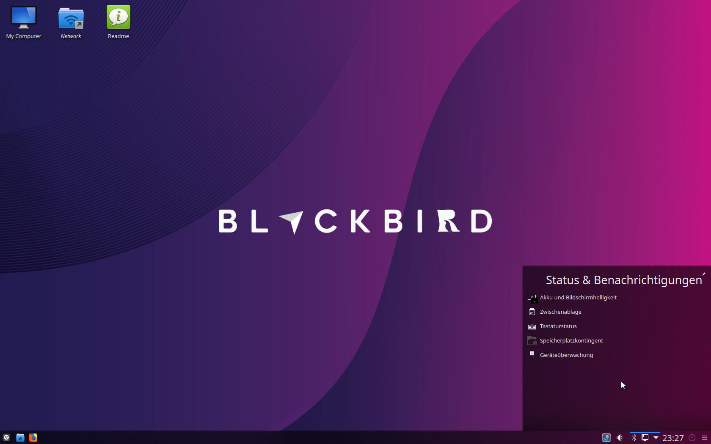
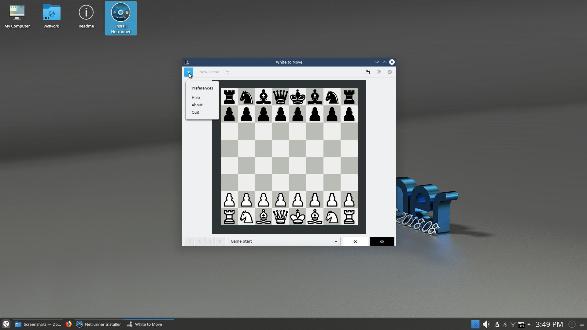
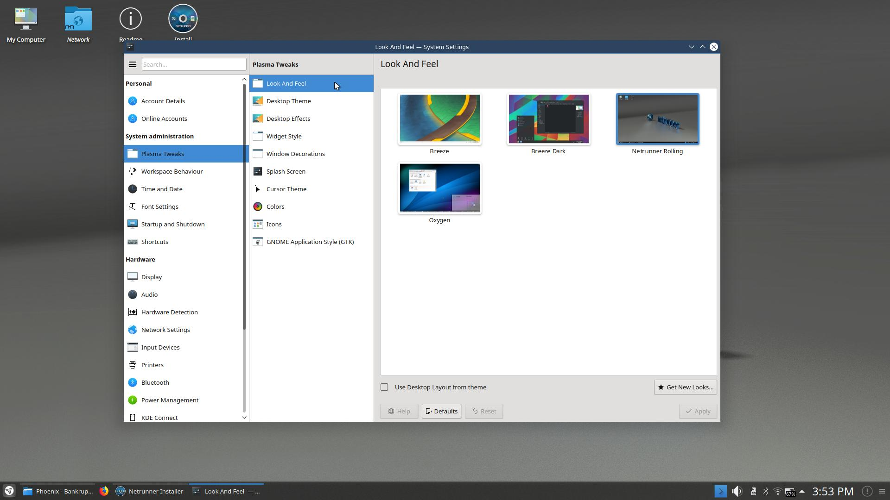

- Readme Blackbird OS Released
19.01
After a busy holiday season, the Netrunner Team is happy to announce the immediate availability of Netrunner 19.01 Blackbird OS – 64bit ISO.
Here are the main updates as of our snapshot of Debian Testing:
Around this time of the year, we thought we could try something more vivid and colorful to lighten up the shortened days.
So instead of going with the previously used “material look”, we thought of something different.
Blackbird ships with a new Look and Feel Theme called “Netrunner Black” that is based on a dark, yet not too harsh contrasting visual.
Using the Kvantum Theme engine plus the Alpha-Black Plasma Theme allowed us to create a more 3D-looking design.
For those who prefer the classic look, going back to the well-known LNF is a three-button click and explained under “Tips” in our current Readme Section.
Glowing Hot-Corner
Moving the mouse into the lower right corner now visibly activates the “Minimize all Windows to show Desktop” function by a light glow.
19.01 brings the addition of webapps. These are links to popular sites that can be easily invoked by searching them via ALT-SPACE or added as launchers from the menu. As an example, try “hook” for starting up Hooktube.
Opendesktop.org
Another of these webapp sites is Opendesktop.org. It comes with the ocs-url package preinstalled that is associating the ocs:// url in Firefox. With it you can easily surf store.kde.org and install most things directly via the “Install” button instead of just downloading.
The Firefox in this version comes with the Plasma-Integration addon preinstalled. It adds visual feedback for downloading items in the taskbar as well as media control from within Plasma.
As with on Rolling, GTK Apps now use Kwin borders integrating nicely with the rest of the Plasma desktop environment.
Krita is shipped as 4.x release, which got some nice overhauls and features compared to previous version.
Using the sidebar Layout, all UI-related KCM modules are now to be found under the main section called “Plasma Tweaks”.
You can get the latest Netrunner 19.01 ISO from our Download page here.
We hope you enjoy it and share your feedback in our new forums.
 © Blackbird OS · Thank you
© Blackbird OS · Thank you